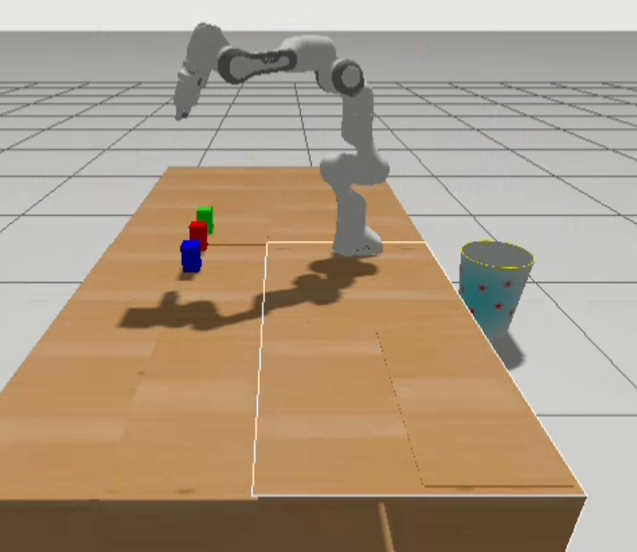
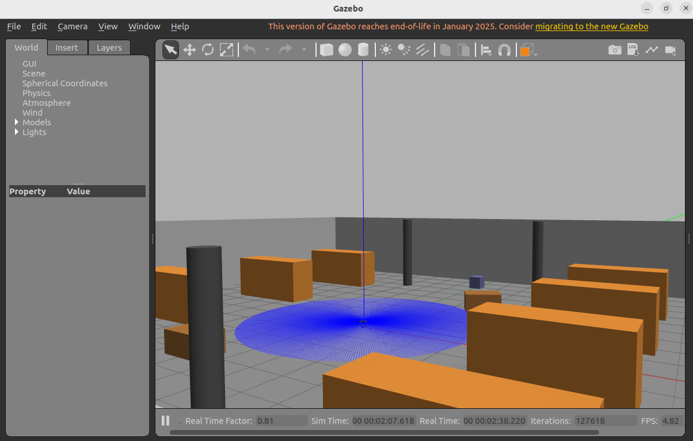
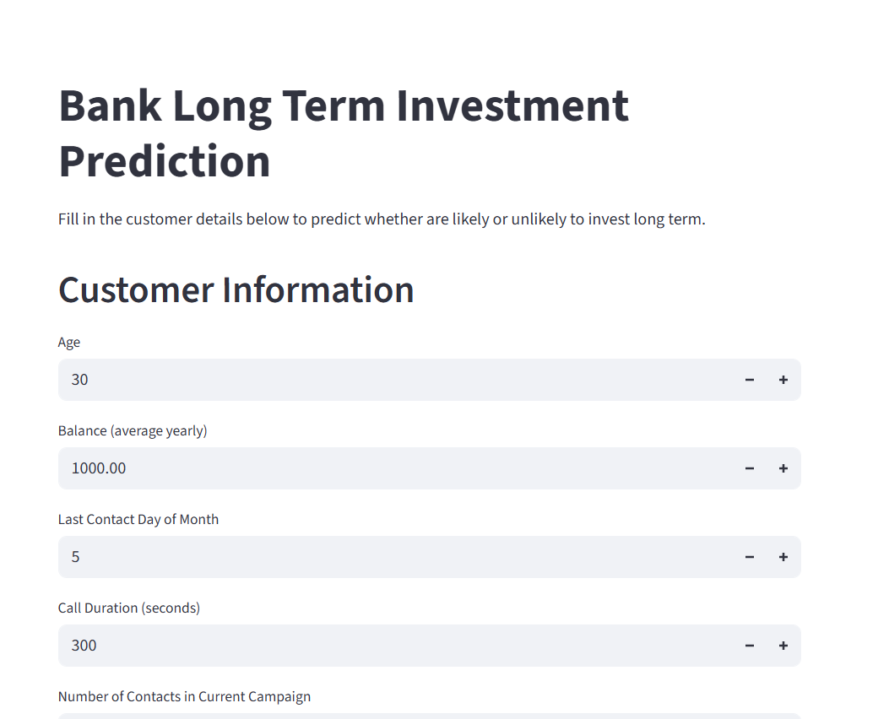

An autonomous ROS 2 pick-and-place system using MoveIt 2, Gazebo, and OpenCV to detect, grasp, and sort colored objects with a Franka Emika Panda robot.
This project demonstrates an end-to-end manipulation pipeline: perception → TF → motion planning → control → simulation.

A structured computer vision roadmap featuring beginner, intermediate, and advanced projects — progressing from OpenCV fundamentals to real-world perception systems for robotics and autonomous applications.
A complete ROS 2 autonomous navigation system for TurtleBot3 Burger in a simulated warehouse environment. This project implements SLAM mapping, localization, and autonomous navigation using Nav2 stack.

An end-to-end machine learning project that predicts whether a bank client will invest longterm. The project covers data ingestion, transformation, model training, evaluation with explainability (using SHAP), and deployment through a Streamlit app. Experiment tracking is performed using MLflow, and CI/CD is set up via GitHub Actions.

A Complete ROS 2 implementation of an autonomous mobile manipulator for warehouse item pickup tasks. This project demonstrates integration of navigation (Nav2), manipulation (MoveIt), and perception in a simulated warehouse environment.